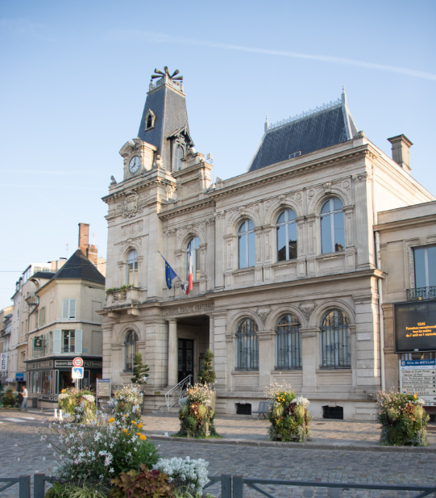
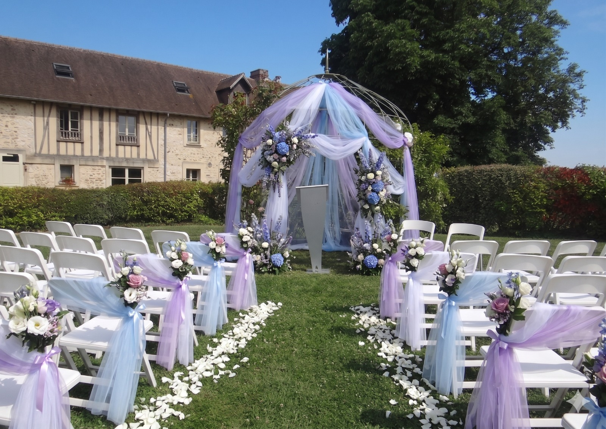

Sébastien & Bruno
Le Programme de notre Mariage
Le Déroulé de la Journée
Nous sommes heureux de partager ces moments uniques avec vous. Voici le fil conducteur de notre journée.
🏛️ 13h30 - 14h30 : Cérémonie Civile
-
13h30Arrivée à la mairie
Rassemblement des invités et des mariés. -
14h00Cérémonie civile
À la mairie de Meulan. -
14h30Fin de la cérémonie
Félicitations et partages.

🌿 14h45 - 17h00 : Arrivée à La Grange
-
14h45Départ en cortège
En route direction La Grange ! -
16h00Arrivée à La Grange
-
16h00
16h30Pause rafraîchissement
Pause fraîcheur, commodités et accueil des convives qui arrivent directement au domaine. -
16h30
17h00Placement des invités & Cérémonie du sable
À leur entrée, les invités s'installent et remplissent le vase au fur et à mesure.

Entrée
Vin d'honneur
Cérémonie
Photos
Parking
🕊️ 17h00 - 17h45 : La Cérémonie Laïque
| Timing | Étape | Détails |
|---|---|---|
| 17h00 | L'Introduction | Entrée des témoins, introduction générale par l'officiant(e), puis Entrée des mariés (Bruno et Sébastien). |
| 17h10 | Les Discours | Intervention d'un témoin de Sébastien, suivie de l'intervention d'un témoin de Bruno. |
| 17h25 | Les Rituels | Petit mot de transition → Les mariés sont invités à se lever. • Cérémonie du ruban |
| 17h35 | L'Engagement | Échange des vœux + Petite phrase symbolique sur le fait de se choisir l'un et l'autre devant l'assistance comme témoin. |
| 17h40 | Le Final | Plantage de la rose dans le vase → Baiser des mariés 💋 |
| 17h45 | Clôture | Invitation officielle des mariés au vin d'honneur. |

🥂 17h45 - 20h00 : Le Vin d'Honneur & Photos
-
17h45Arrivée au vin d'honneur
Consignes données aux invités. -
18h00
19h30Photos de groupe
Chaque groupe est appelé l'un après l'autre pour faire sa photo avec le couple. -
19h30
20h00Photos de couple
Les mariés s'éclipsent pour les photos de couple, pendant que les invités profitent du vin d'honneur.
🍽️ À partir de 20h00 : Le Dîner & La Fête
-
20h00Début du dîner
Installation en salle. -
20h15Discours des mariés
Mot de remerciement à l'assistance. -
20h30Service du Plat
-
21h151ère intervention
Par les témoins ou les proches. -
21h30Service du Fromage
-
22h002e intervention
-
22h15Service du Dessert
-
22h453e intervention
-
23h00✨ Ouverture de la piste de danse
Début de la soirée festive jusqu'au bout de la nuit !